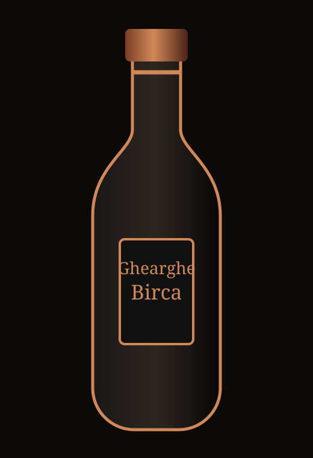
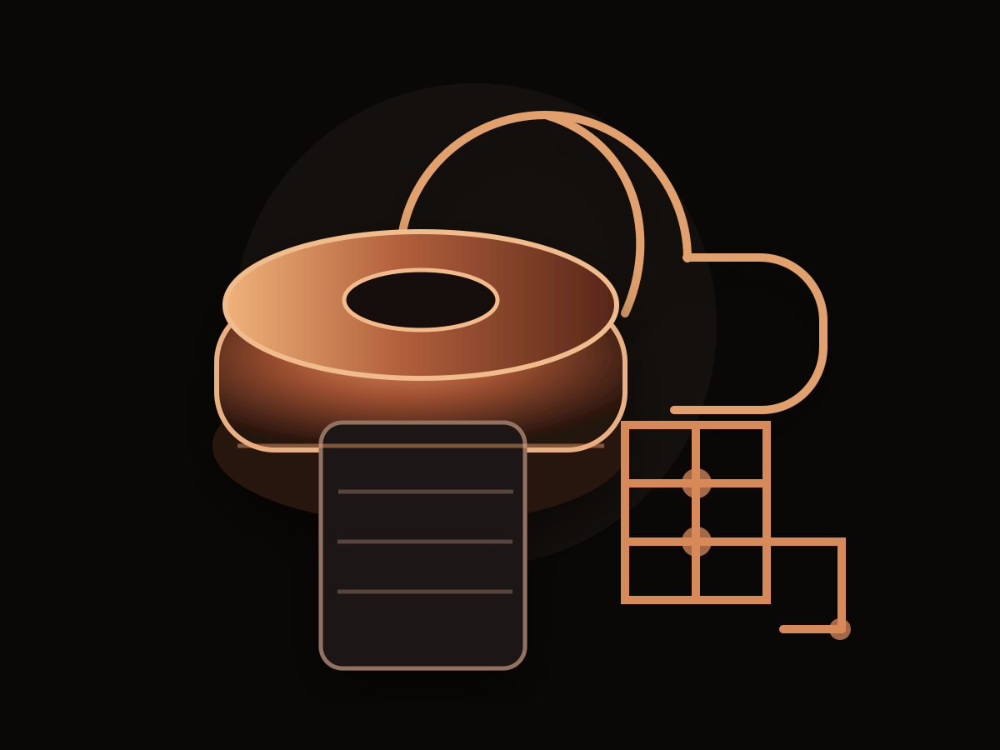
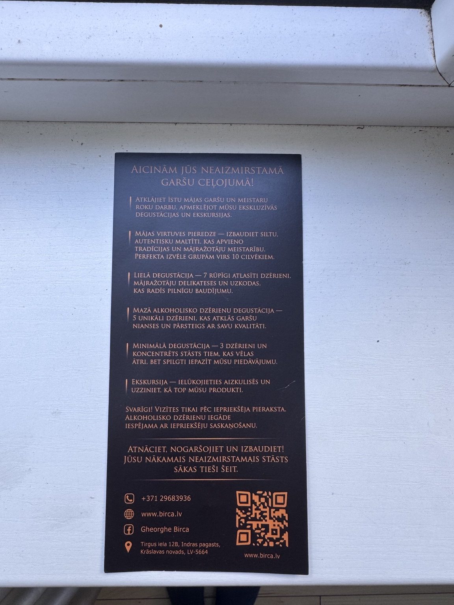
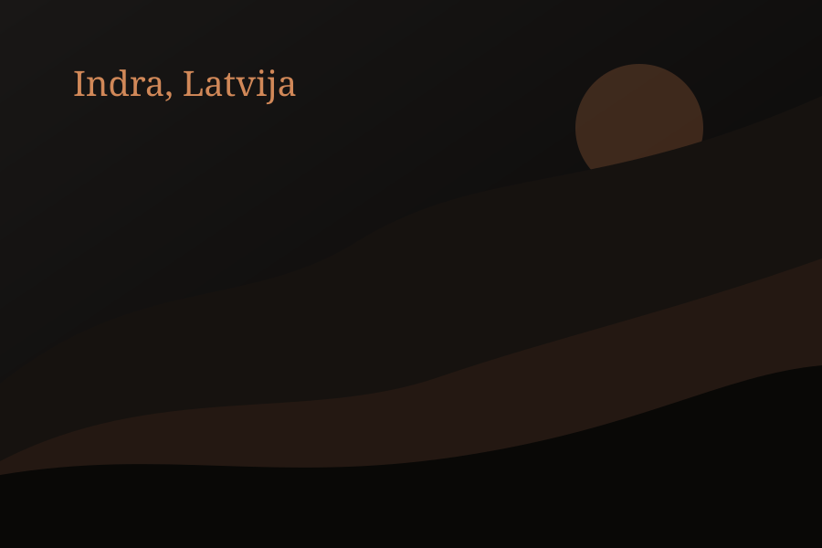

Birca Signature
Sabalansēts, aromātisks mājas dzēriens degustācijām un dāvanām.
- Stiprums
- 40%
- Tilpums
- 0.5 L
- Statuss
- Pēc pieprasījuma
Alkoholisko dzērienu darītava · Indra, Latvija
Premium mājražoti dzērieni, degustācijas un ekskursijas nelielām grupām pēc iepriekšēja pieraksta.

Ghearghe Birca darītava Indrā veido dzērienus ar uzsvaru uz autentisku garšu, lokālu stāstu un rūpīgi kontrolētu ražošanas procesu. Šī demo mājaslapa paplašina jau esošo premium identitāti no drukātā flajera digitālā pieredzē.
Reālais saturs, produktu apraksti un fotogrāfijas nomaināmi vienā vietā bez dizaina pārbūves.
Dzērienu kolekcija

Sabalansēts, aromātisks mājas dzēriens degustācijām un dāvanām.
Dziļāka garša privātām degustācijām un īpašiem pasākumiem.
Izlase lielajai vai mazajai degustācijai ar meistara stāstu.
Degustācijas un ekskursijas
7 rūpīgi atlasīti dzērieni, mājražotāju delikateses un uzkodas pilnvērtīgai garšu pieredzei.
5 unikāli dzērieni ātrākai, bet izteiksmīgai iepazīšanai ar darītavas piedāvājumu.
3 dzērieni koncentrētam stāstam tiem, kas vēlas spilgti iepazīt piedāvājumu.
Ielūkošanās aizkulisēs: kā top produkti, kā strādā iekārtas un kā veidojas garšas nianses.
Atmosfēra


Kāpēc apmeklēt
Autentiska mājražotāja pieredze
Roku darbs un mazas partijas
Premium degustācijas ar stāstu
Latgales viesmīlība un lokāls raksturs
Atsauksmes
“Ļoti personiska degustācija, skaista atmosfēra un īsts meistara stāsts.”— Viesa atsauksmes vietturis
Vizītes tikai pēc iepriekšēja pieraksta
Alkoholisko dzērienu iegāde iespējama ar iepriekšēju saskaņošanu.